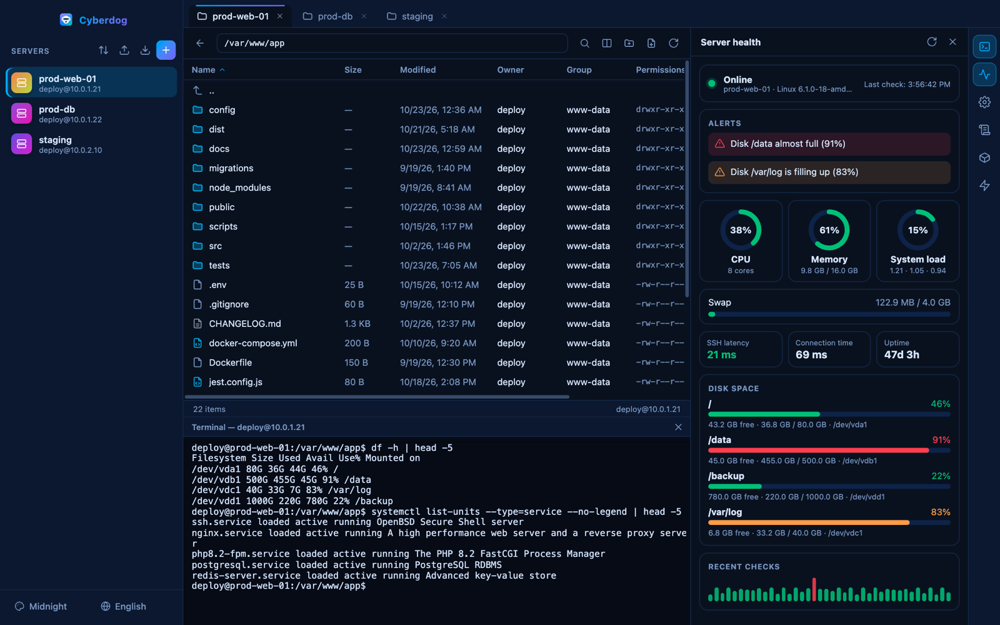

Termius est un client SSH soigné, disponible sur tous les appareils. Si vous cherchez sur ordinateur un terminal, un vrai explorateur de fichiers et un coup d’œil sur l’état de vos serveurs, sans abonnement, Cyberdog le fait gratuitement. Il est open source (MIT), sans compte obligatoire, et garde vos mots de passe et vos clés sur votre ordinateur.
Vous voulez un outil gratuit : pas d’abonnement, et le partage d’équipe est inclus.
Vous lisez, modifiez et déplacez des fichiers distants dans un vrai explorateur avec vue scindée, recherche et éditeur de permissions.
Vous voulez la santé du serveur, les services systemd, les logs en direct et Docker à côté du terminal.
Vous préférez un logiciel open source que vous pouvez auditer et compiler vous-même.
Restez avec Termius si…
Vous travaillez aussi depuis un téléphone ou une tablette : Termius a des apps iOS et Android, Cyberdog est uniquement sur ordinateur.
Vous voulez vos hôtes et vos clés synchronisés sur tous vos appareils via un compte.
Vous avez besoin du transfert de ports ou d’une chaîne de plusieurs rebonds. Cyberdog n’a pas de transfert de ports et gère un seul bastion.
Vous voulez un produit commercial avec un support éditeur.
Fonction par fonction
Cyberdog comparé à Termius
Fonction
Termius
Cyberdog
Prix et licence
Offre gratuite, offres payantes pour la synchronisation et les équipes. Code fermé.
Gratuit. Open source (MIT).
Plateformes
macOS, Windows, Linux, iOS et Android.
macOS, Windows et Linux.
Compte
Compte utilisé pour la synchronisation entre appareils.
Aucun requis. Compte facultatif pour les équipes.
Terminal
Oui, avec autocomplétion et snippets.
Oui, avec thèmes, ouvert dans le dossier courant de l’explorateur.
Explorateur SFTP
Oui.
Oui : onglets, vue scindée, recherche distante, éditeur de permissions, file de transferts reprenables, éditeur de code intégré.
Autres protocoles
Centré sur SSH (Mosh et Telnet aussi).
FTP/FTPS, compatible S3, Azure, WebDAV, SMB, Dropbox, OneDrive, Google Drive.
Santé, services, logs, Docker
Non intégré.
Oui, sans agent, via SSH : santé, services systemd, tâches planifiées (cron, timers), logs en direct, Docker et Kubernetes.
Transfert de ports
Oui.
Non disponible.
Rebonds
Chaînage d’hôtes sur plusieurs rebonds.
Un bastion réutilisable (un saut), avec test du trajet.
Commandes sur plusieurs serveurs
Snippets.
Actions rapides sur un ou sur tous les serveurs ouverts.
Équipes
Offres d’équipe (payantes).
Rôles, liens d’invitation, serveurs partagés et historique. Gratuit.
Secrets
Coffre chiffré intégré.
Connecteurs pour 1Password, Bitwarden, HashiCorp Vault, AWS Secrets Manager, Azure Key Vault et d’autres.
D’après la documentation publique, vérifiée en novembre 2026. Les produits évoluent : si une information est périmée, ouvrez une issue sur GitHub.
Cyberdog en images

Explorateur de fichiers, terminal et santé du serveur dans une seule fenêtre.
Passer de Termius à Cyberdog
Cyberdog n’importe pas encore les hôtes Termius : le menu d’import couvre Cyberduck, FileZilla, WinSCP et les fichiers ZIP Cyberdog. Ajoutez vos serveurs avec un nom, un hôte, un identifiant et un mot de passe ou une clé SSH. Vous pouvez générer des clés, installer la clé publique sur un serveur et tout organiser en groupes.
Questions
Cyberdog peut-il remplacer entièrement Termius ?
Sur ordinateur, pour SSH, SFTP et la supervision de serveurs, en général oui. Ce n’est pas le cas si vous avez besoin d’apps mobiles, de la synchronisation entre appareils, du transfert de ports ou d’une chaîne de plusieurs rebonds.
Où sont stockés mes mots de passe et mes clés ?
Les mots de passe sont chiffrés avec le trousseau de votre système et les clés privées restent sur votre ordinateur. Le compte facultatif ne stocke que ce que vous choisissez de partager avec une équipe (nom, hôte, port et identifiant). La synchronisation des identifiants SSH d’un serveur partagé est facultative.
Le partage d’équipe est-il vraiment gratuit ?
Oui. Équipes, rôles, liens d’invitation, scripts partagés et historique des serveurs sont gratuits. Tout repose sur un compte facultatif ; Cyberdog fonctionne sans.
Cyberdog est-il affilié à Termius ?
Non. Cyberdog est un projet open source indépendant, sans lien avec Termius et non approuvé par lui.
Essayez Cyberdog
Gratuit, open source, sans compte. Vos mots de passe restent sur votre ordinateur.
Cyberduck, Termius et WinSCP sont des marques de leurs propriétaires respectifs. Cyberdog est un projet indépendant, sans lien avec eux et non approuvé par eux.